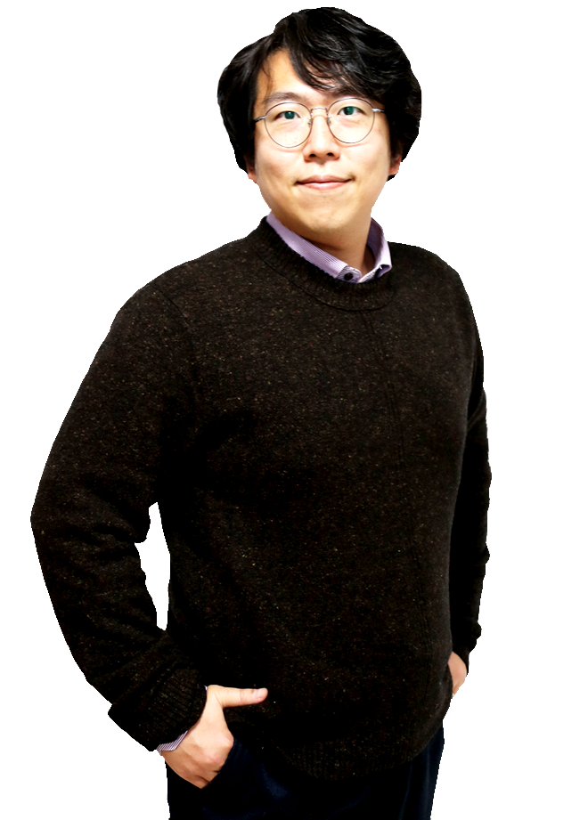

About me
I am an Associate Professor in the Department of Mathematical Sciences at KAIST. I joined KAIST in February 2017. Before joining KAIST, I was a postdoctoral researcher at University of Bonn from Sep. 2014 to Jan. 2017.
I got Ph.D. in Mathematics at Cornell University in Aug. 2014 under the supervision of Bill Thurston, John Hubbard, and Dylan Thurston.
I was at UC Davis as a visiting graduate student with the guidance of Joel Hass in the academic year 2012-2013.
Throughout my graduate school years, Bill changed the way I view Mathematics completely. Here is one of my favorite quotes.
"When the moment of understanding Thurston finally hits you, the amount of pleasure you get is infinite" - Jean-Pierre Otal
There are still many advices/comments I got from Bill which I do not fully understand. I hope someday I will be able to make a single coherent picture out of all these small pieces he gave to me. Certainly all of my Math is built upon what he taught to me.
Education
I completed an undergraduate degree in Mathematics at KAIST (Korea Advanced Institute of Science and Technology). In 2009, I came to Cornell and started working with Bill Thurston on hyperbolic geometry and low-dimensional topology.
Interests
I like traveling, taking photos, and enjoying good food with my friends.
My favorite poster so far
